[1]:
from itertools import product
import numpy as np
import pandas as pd
from scipy.stats import gmean
from sklearn.model_selection import train_test_split
from sklearn.metrics import (
accuracy_score, roc_auc_score, roc_curve,
average_precision_score, precision_recall_curve, f1_score
)
from sklearn.linear_model import LogisticRegression
import matplotlib.pyplot as plt
from biodoe_tools.preferences import kwarg_savefig, outputdir, harmonic_mean, f2s
from biodoe_tools.ml import plot_pr, plot_roc
from biodoe_tools.simulation import BenchmarkingPipeline, Test9
from biodoe_tools.simulation.esm9_metrics import *
[2]:
top10 = np.array([
"positive_pathway_coverage",
"max_positive_edge_density",
"max_positive_cascade_length_ratio",
"edge_effectivity",
"mean_factor_density",
"max_synergetic_edge_density",
"mean_positive_edge_density",
"pathway_coverage",
"max_cascade_length_ratio",
"effective_edge_positivity"
])
negs = [
"max_positive_edge_density",
"max_positive_cascade_length_ratio",
"max_synergetic_edge_density",
"mean_positive_edge_density",
"effective_edge_positivity"
]
key_features = [
"positive_pathway_coverage",
"max_positive_edge_density",
"max_synergetic_edge_density",
"mean_positive_edge_density",
"pathway_coverage",
"effective_edge_positivity"
]
[3]:
from tqdm.notebook import tqdm
edges = np.load(f"{outputdir}/esm_test9_edges.npy")
n = (lambda arr: (-1 + np.sqrt(1 + 8 * arr.size)) / 2)(edges[0])
ppc = np.fromiter(map(positive_pathway_coverage, edges), float).reshape(-1, 1)
maxped = np.fromiter(map(lambda arr: 1 - max_positive_edge_density(arr), edges), float).reshape(-1, 1)
maxsed = np.fromiter(map(lambda arr: 1 - max_synergetic_edge_density(arr), edges), float).reshape(-1, 1)
meanped = np.fromiter(map(lambda arr: 1 - mean_positive_edge_density(arr), edges), float).reshape(-1, 1)
pc = np.fromiter(map(pathway_coverage, edges), float).reshape(-1, 1)
eep = np.fromiter(map(lambda arr: 1 - effective_edge_positivity(arr), edges), float).reshape(-1, 1)
full = np.hstack([ppc, maxped, maxsed, meanped, pc, eep])
df = pd.concat(
[
pd.read_feather(f"{outputdir}/esm_test9.feather"),
pd.DataFrame(
full,
columns=key_features
),
pd.DataFrame({
f"arithmetic{i + 1}": mat.mean(axis=1) for i, mat in tqdm(enumerate(
[
full[:, np.where(arr_bool)[0]] for arr_bool in map(
lambda lst_bool: np.array(lst_bool),
product(*[[True, False]] * 6)
) if arr_bool.sum() > 1
]
))
})
],
axis=1
)
df = df.assign(
better_with_pb=df.pb > df.cloo
)
[4]:
df
[4]:
| cloo | pb | v | positive_pathway_coverage | max_positive_edge_density | max_synergetic_edge_density | mean_positive_edge_density | pathway_coverage | effective_edge_positivity | ... | arithmetic49 | arithmetic50 | arithmetic51 | arithmetic52 | arithmetic53 | arithmetic54 | arithmetic55 | arithmetic56 | arithmetic57 | better_with_pb | ||
|---|---|---|---|---|---|---|---|---|---|---|---|---|---|---|---|---|---|---|---|---|---|
| 0 | 0.666667 | 0.526316 | 1 | C+LOO | 0.222222 | 0.583333 | 0.583333 | 0.891667 | 0.666667 | 0.583333 | ... | 0.686111 | 0.737500 | 0.611111 | 0.625000 | 0.583333 | 0.713889 | 0.779167 | 0.737500 | 0.625000 | False |
| 1 | 1.000000 | 0.181818 | 1 | C+LOO | 0.111111 | 0.705882 | 0.705882 | 0.958333 | 0.555556 | 0.647059 | ... | 0.770425 | 0.832108 | 0.636166 | 0.630719 | 0.676471 | 0.720316 | 0.756944 | 0.802696 | 0.601307 | False |
| 2 | 0.000000 | 0.526316 | 0 | neither | 0.333333 | 0.761905 | 0.285714 | 0.933333 | 0.666667 | 0.285714 | ... | 0.501587 | 0.609524 | 0.412698 | 0.476190 | 0.285714 | 0.628571 | 0.800000 | 0.609524 | 0.476190 | True |
| 3 | 0.307692 | 0.674699 | 2 | PB | 0.333333 | 0.800000 | 0.800000 | 0.958333 | 0.777778 | 0.700000 | ... | 0.819444 | 0.879167 | 0.759259 | 0.788889 | 0.750000 | 0.812037 | 0.868056 | 0.829167 | 0.738889 | True |
| 4 | 0.000000 | 0.457831 | 0 | neither | 0.111111 | 0.875000 | 0.687500 | 0.983333 | 0.555556 | 0.437500 | ... | 0.702778 | 0.835417 | 0.560185 | 0.621528 | 0.562500 | 0.658796 | 0.769444 | 0.710417 | 0.496528 | True |
| ... | ... | ... | ... | ... | ... | ... | ... | ... | ... | ... | ... | ... | ... | ... | ... | ... | ... | ... | ... | ... | ... |
| 19995 | 0.240964 | 0.780488 | 2 | PB | 0.222222 | 0.782609 | 0.782609 | 0.925000 | 0.666667 | 0.565217 | ... | 0.757609 | 0.853804 | 0.671498 | 0.724638 | 0.673913 | 0.718961 | 0.795833 | 0.745109 | 0.615942 | True |
| 19996 | 0.000000 | 0.000000 | 0 | neither | 0.222222 | 0.956522 | 0.478261 | 0.991667 | 0.777778 | 0.347826 | ... | 0.605918 | 0.734964 | 0.534622 | 0.628019 | 0.413043 | 0.705757 | 0.884722 | 0.669746 | 0.562802 | False |
| 19997 | 0.156250 | 0.228571 | 0 | neither | 0.444444 | 0.681818 | 0.500000 | 0.925000 | 0.777778 | 0.454545 | ... | 0.626515 | 0.712500 | 0.577441 | 0.638889 | 0.477273 | 0.719108 | 0.851389 | 0.689773 | 0.616162 | True |
| 19998 | 0.357143 | 0.000000 | 0 | neither | 0.444444 | 0.678571 | 0.678571 | 0.841667 | 0.888889 | 0.392857 | ... | 0.637698 | 0.760119 | 0.653439 | 0.783730 | 0.535714 | 0.707804 | 0.865278 | 0.617262 | 0.640873 | False |
| 19999 | 0.000000 | 0.000000 | 0 | neither | 0.222222 | 0.909091 | 0.636364 | 0.991667 | 0.555556 | 0.545455 | ... | 0.724495 | 0.814015 | 0.579125 | 0.595960 | 0.590909 | 0.697559 | 0.773611 | 0.768561 | 0.550505 | False |
20000 rows × 68 columns
from sklearn.metrics import confusion_matrix
[5]:
import seaborn as sns
[6]:
def div22():
weight = np.array([1 / n, 1 - (1 / n)])
val = np.hstack([
ppc,
maxped
])
return (weight * val).sum(axis=1) / weight.sum()
def div3():
weight = np.array([1, n, (n + 1) * (n - 1), 1])
val = np.hstack([
ppc,
maxped,
meanped,
pc
])
return (weight * val).sum(axis=1) / weight.sum()
def div1234():
weight = np.array([1, n, n ** 2, 1])
val = np.hstack([
ppc,
maxped,
meanped,
pc
])
return (weight * val).sum(axis=1) / weight.sum()
def div123():
weight = np.array([1, n, n ** 2])
val = np.hstack([
ppc,
maxped,
meanped,
])
return (weight * val).sum(axis=1) / weight.sum()
def div234():
weight = np.array([n, n ** 2, 1])
val = np.hstack([
maxped,
meanped,
pc
])
return (weight * val).sum(axis=1) / weight.sum()
def div23():
weight = np.array([n, n ** 2])
val = np.hstack([
maxped,
meanped,
])
return (weight * val).sum(axis=1) / weight.sum()
[7]:
# df = pd.concat(
# [
# df,
# pd.DataFrame(dict(
# div22=div22(),
# div3=div3(),
# div1234=div1234(),
# div123=div123(),
# div234=div234(),
# div23=div23()
# ))
# ],
# axis=1
# )
[9]:
fig, ax = plt.subplots(figsize=(3, 3))
features = [df.loc[:, v] for v in key_features]
names = [
r"$1-$" + feat_names_short[v] if v in negs else feat_names_short[v] for v in key_features
]
cmap = sns.color_palette("husl", len(features))
for i, y in enumerate(features):
ax.plot(
*roc_curve(df.better_with_pb, y)[:2],
label=names[i] + f" (AUROC: {round(roc_auc_score(df.better_with_pb, y), 3)})",
c=cmap[i]
)
ax.plot([0, 1], [0, 1], linestyle=(0, (1, 2)), c="gray", zorder=1, alpha=0.5)
ax.legend(fontsize="x-small", loc="center left", bbox_to_anchor=(1, .5), frameon=False)
ax.set(xlabel="false positive rate", ylabel="true positive rate")
# fig.savefig(f"{outputdir}/test9_roc", **kwarg_savefig)
[9]:
[Text(0.5, 0, 'false positive rate'), Text(0, 0.5, 'true positive rate')]
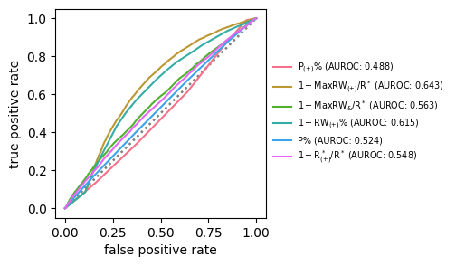
[10]:
fig, ax = plt.subplots(figsize=(3, 3))
features = [df.loc[:, v] for v in key_features]
names = [
r"$1-$" + feat_names_short[v] if v in negs else feat_names_short[v] for v in key_features
]
cmap = sns.color_palette("husl", len(features))
df_bar = pd.DataFrame({
"": names,
"AUROC": [roc_auc_score(df.better_with_pb, y) for y in features],
"cmap": cmap
}, index=key_features).sort_values("AUROC", ascending=False)
sns.barplot(
data=df_bar,
x="AUROC", y="", hue="",
palette=df_bar.cmap.tolist()
)
# fig.savefig(f"{outputdir}/test9_auc", **kwarg_savefig)
[10]:
<Axes: xlabel='AUROC'>
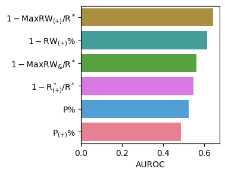
[12]:
fig, ax = plt.subplots(figsize=(3, 3))
features = [
eval("df.arithmetic" + f"{i + 1}") for i in range(57)
]
names = [
f"arithmetic{i + 1}" for i in range(57)
]
cmap = sns.color_palette("Spectral", len(features))
for i, y in enumerate(features):
ax.plot(
*roc_curve(df.better_with_pb, y)[:2],
label=names[i] + f" (AUROC: {round(roc_auc_score(df.better_with_pb, y), 3)})",
c=cmap[i],
zorder=-i
)
ax.plot([0, 1], [0, 1], linestyle=(0, (1, 2)), c="gray", zorder=1, alpha=0.5)
ax.legend(fontsize="x-small", loc="center left", bbox_to_anchor=(1, .5), ncol=3, frameon=False)
ax.set(title="ESM9", xlabel="FPR", ylabel="TPR")
# fig.savefig(f"{outputdir}/test9_roc_arithmetic", **kwarg_savefig)
[12]:
[Text(0.5, 1.0, 'ESM9'), Text(0.5, 0, 'FPR'), Text(0, 0.5, 'TPR')]
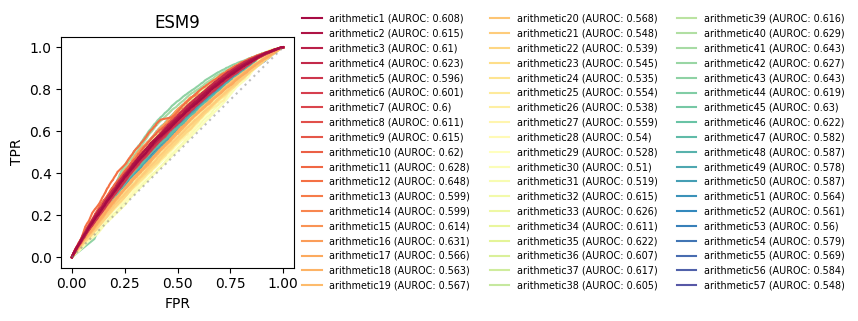
[13]:
fig, ax = plt.subplots(figsize=(3, 3))
features = [
eval("df.arithmetic" + f"{i + 1}") for i in range(57)
]
names = [
f"arithmetic{i + 1}" for i in range(57)
]
df_bar_arith = pd.DataFrame({
"": names,
"AUROC": [roc_auc_score(df.better_with_pb, y) for y in features],
"cmap": sns.color_palette("Spectral", len(features))
}, index=names).sort_values("AUROC", ascending=False).iloc[:5, :]
sns.barplot(
data=df_bar_arith,
x="AUROC", y="", hue="",
palette=df_bar_arith.cmap.tolist()
)
for i, auroc in enumerate(df_bar_arith.AUROC):
ax.text(
auroc, i, round(auroc, 3),
ha="right", va="center", color="w"
)
ax.set(title="ESM9")
# fig.savefig(f"{outputdir}/test9_auc_arithmetic", **kwarg_savefig)
[13]:
[Text(0.5, 1.0, 'ESM9')]
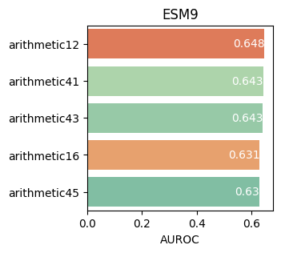
[14]:
from sklearn.model_selection import StratifiedKFold, train_test_split
from scipy.interpolate import interp1d
from scipy.stats import bootstrap
from biodoe_tools.preferences import kwarg_bootstrap
[15]:
def roc_integration(
data, key
):
data_key = data.loc[data.feat_names == key, ["x", "y", "folds"]]
return pd.DataFrame({
"feat_names": [key] * data_key.x.unique().size,
"x": np.sort(data_key.x.unique()),
**{
f"fold_{i}": interp1d(
np.sort(data_key.x[data_key.folds == i].values),
data_key.y[data_key.folds == i].values[
np.argsort(data_key.x[data_key.folds == i].values)
]
)(np.sort(data_key.x.unique())) for i in data_key.folds.unique()
},
})
def roc_multimetric_integration(data):
return pd.concat(
[roc_integration(data, key) for key in data.feat_names.unique()],
axis=0
)
[16]:
arr_condition = np.vstack([
arr_bool for arr_bool in map(
lambda lst_bool: np.array(lst_bool),
product(*[[True, False]] * 6)
) if arr_bool.sum() > 1
])
[17]:
xs, ys = np.array([]), np.array([])
feat_names = []
folds = []
metrics = [
f"arithmetic{i + 1}" for i in range(len(arr_condition))
]
aurocs = {key: [] for key in metrics}
for i, (_, te) in enumerate(
StratifiedKFold(
n_splits=30, shuffle=True, random_state=0
).split(df[metrics], df.better_with_pb)
):
x_te, y_te = df[metrics].loc[te, :], df.better_with_pb[te]
for key in metrics:
x, y = roc_curve(y_te, x_te[key])[:2]
xs, ys = np.hstack([xs, x]), np.hstack([ys, y])
feat_names += [key] * x.size
folds += [i] * x.size
aurocs[key] += [roc_auc_score(y_te, x_te[key])]
df_roc = pd.DataFrame({
"x": xs, "y": ys, "feat_names": feat_names, "folds": folds
})
aurocs_ci = {
k: bootstrap(
(v,), **kwarg_bootstrap
).confidence_interval for k, v in aurocs.items()
}
[18]:
fig, ax = plt.subplots(figsize=(3, 3))
plt.subplots_adjust(wspace=.55)
df_roc_integrated = roc_multimetric_integration(df_roc)
fixed_cmap = {
# **fixed_cmap,
**{
f"arithmetic{i + 1}": c for i, c in enumerate(
sns.color_palette("rainbow_r", len(arr_condition))
)
}
}
# sorted_feat_names = pd.DataFrame(aurocs).mean().sort_values(ascending=False).index
# sorted_cmap = pd.Series(
# [i for i in range(len(metrics))], index=metrics
# )[sorted_feat_names].apply(lambda i: cmap[i]).tolist()
df_auroc = pd.DataFrame({
"AUROC": np.array([aurocs[k] for k in metrics]).ravel(),
"feat_names": np.array([[k] * len(aurocs[k]) for k in metrics]).ravel(),
"": np.array([[k.split("arithmetic")[-1]] * len(aurocs[k]) for k in metrics]).ravel()
})
df_mean_auroc = df_auroc.loc[
:, ["feat_names", "AUROC"]
].groupby("feat_names").mean().loc[metrics]
for i, key in enumerate(metrics):
df_roc_sep = df_roc_integrated.loc[
df_roc_integrated.feat_names == key, :
]
low, high = aurocs_ci[key].low, aurocs_ci[key].high
ax.plot(
df_roc_sep.x,
df_roc_sep.iloc[:, 2:].mean(axis=1),
c=fixed_cmap[metrics[i]],
label=metrics[i] + f" (AUROC: {f2s(df_mean_auroc.loc[key].item())} [{f2s(low)}–{f2s(high)}])",
)
ax.fill_between(
df_roc_sep.x,
df_roc_sep.iloc[:, 2:].mean(axis=1) - df_roc_sep.iloc[:, 2:].std(axis=1),
df_roc_sep.iloc[:, 2:].mean(axis=1) + df_roc_sep.iloc[:, 2:].std(axis=1),
color=fixed_cmap[metrics[i]], alpha=.2, zorder=-(i + 1) * 10
)
ax.plot([0, 1], [0, 1], linestyle=(0, (1, 2)), c="gray", zorder=1, alpha=0.5)
ax.set(title="ESM4", xlabel="FPR", ylabel="TPR")
ax.legend(fontsize="x-small", loc="center left", bbox_to_anchor=(1, .5), ncol=3, frameon=False)
# fig.savefig(f"{outputdir}/test9_roc_arithmetic", **kwarg_savefig)
[18]:
<matplotlib.legend.Legend at 0x7f161c221510>
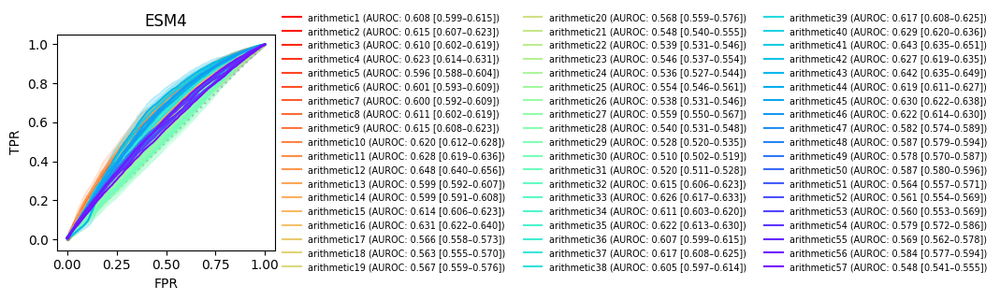
[19]:
fig, ax = plt.subplots(figsize=(13, 3))
sns.stripplot(
data=df_auroc,
y="AUROC", x="", size=3, hue="",
ax=ax,
palette=[fixed_cmap[v] for v in metrics], alpha=.7
)
ax.set_xlim([-1, 57])
ax.set_ylim(np.array(ax.get_ylim()) + np.array([-.003, 0]))
# ax.set_xticks(ax.get_xticks())
# ax.set_xticklabels(df_auroc.loc[:, ""].unique(), rotation=90, ha="right")
xlim = (lambda v1, v2: v2 - v1)(*np.sort(np.array(ax.get_xlim())))
for i, name in enumerate(metrics):
ax.hlines(df_mean_auroc.loc[name], i - (xlim * .005), i + (xlim * .005), color=fixed_cmap[name])
ax.hlines(aurocs_ci[name].low, i - (xlim * .01), i + (xlim * .01), color=fixed_cmap[name])
ax.hlines(aurocs_ci[name].high, i - (xlim * .01), i + (xlim * .01), color=fixed_cmap[name])
ax.vlines(i, aurocs_ci[name].low, aurocs_ci[name].high, color=fixed_cmap[name])
ax.text(i, aurocs_ci[name].low - 0.015, f"{i + 1}", ha="center", va="top", size=8)
ax.tick_params(labelbottom=False, bottom=False)
# ax.spines["bottom"].set_visible(False)
# ax.spines["top"].set_visible(False)
# ax.spines["right"].set_visible(False)
ax.set(title="ESM9", xlabel="Composite indices (arithmetic#)")
fig.savefig(f"{outputdir}/test9_roc_arithmetic.pdf", **kwarg_savefig)
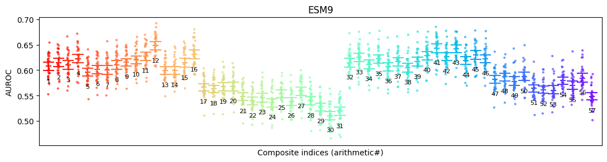
[20]:
fig, ax = plt.subplots(figsize=(3, 3))
metrics = df_mean_auroc.sort_values("AUROC", ascending=False).index[:5].tolist()
df_temp = df_auroc.loc[
np.sum([df_auroc.feat_names == m for m in metrics], axis=0).astype(bool), :
]
sns.stripplot(
data=df_temp.loc[
df_temp["feat_names"].apply(
lambda name: {v: i for i, v in enumerate(metrics)}[name]
).sort_values().index, :
],
y="AUROC", x="", size=3, hue="",
ax=ax,
palette=[fixed_cmap[v] for v in metrics], alpha=.4
)
# ax.set_xlim([-1, 57])
# ax.set_ylim(np.array(ax.get_ylim()) + np.array([-.003, 0]))
# ax.set_xticks(ax.get_xticks())
# ax.set_xticklabels(df_auroc.loc[:, ""].unique(), rotation=90, ha="right")
xlim = (lambda v1, v2: v2 - v1)(*np.sort(np.array(ax.get_xlim())))
for i, name in enumerate(metrics):
ax.hlines(df_mean_auroc.loc[name], i - (xlim * .025), i + (xlim * .025), color=fixed_cmap[name])
ax.hlines(aurocs_ci[name].low, i - (xlim * .05), i + (xlim * .05), color=fixed_cmap[name])
ax.hlines(aurocs_ci[name].high, i - (xlim * .05), i + (xlim * .05), color=fixed_cmap[name])
ax.vlines(i, aurocs_ci[name].low, aurocs_ci[name].high, color=fixed_cmap[name])
ax.text(i, aurocs_ci[name].low - 0.005, f"{metrics[i].split('arithmetic')[-1]}", ha="center", va="top", size=8)
ax.tick_params(labelbottom=False, bottom=False)
# ax.spines["bottom"].set_visible(False)
# ax.spines["top"].set_visible(False)
# ax.spines["right"].set_visible(False)
ax.set(title="ESM9", xlabel="Composite indices (arithmetic#)")
fig.savefig(f"{outputdir}/test9_auc_arithmetic.pdf", **kwarg_savefig)
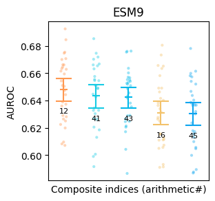
[21]:
np.arange(1, 58, 1)[
np.argsort(
np.arange(57)[
np.argsort(df_mean_auroc.AUROC.values)
][::-1]
)
]
[21]:
array([24, 18, 23, 10, 31, 27, 28, 22, 17, 13, 7, 1, 29, 30, 20, 4, 41,
43, 40, 39, 48, 52, 50, 54, 47, 53, 46, 51, 55, 57, 56, 19, 9, 21,
12, 25, 15, 26, 16, 6, 2, 8, 3, 14, 5, 11, 35, 33, 37, 32, 42,
44, 45, 36, 38, 34, 49])
[22]:
xs_roc, ys_roc = np.array([]), np.array([])
xs_pr, ys_pr = np.array([]), np.array([])
feat_names_roc, feat_names_pr = [], []
folds_roc, folds_pr = [], []
metrics = key_features + ["arithmetic12"]
aurocs = {key: [] for key in metrics}
aps = {key: [] for key in metrics}
for i, (_, te) in enumerate(
StratifiedKFold(
n_splits=30, shuffle=True, random_state=0
).split(df[metrics], df.better_with_pb)
):
x_te, y_te = df[metrics].loc[te, :], df.better_with_pb[te]
for key in metrics:
x_roc, y_roc = roc_curve(y_te, x_te[key])[:2]
x_pr, y_pr = precision_recall_curve(y_te, x_te[key])[:2][::-1]
xs_roc, ys_roc = np.hstack([xs_roc, x_roc]), np.hstack([ys_roc, y_roc])
xs_pr, ys_pr = np.hstack([xs_pr, x_pr]), np.hstack([ys_pr, y_pr])
feat_names_roc += [key] * x_roc.size
feat_names_pr += [key] * x_pr.size
folds_roc += [i] * x_roc.size
folds_pr += [i] * x_pr.size
aurocs[key] += [roc_auc_score(y_te, x_te[key])]
aps[key] += [average_precision_score(y_te, x_te[key])]
df_roc = pd.DataFrame({
"x": xs_roc, "y": ys_roc, "feat_names": feat_names_roc, "folds": folds_roc
})
df_pr = pd.DataFrame({
"x": xs_pr, "y": ys_pr, "feat_names": feat_names_pr, "folds": folds_pr
})
aurocs_ci = {
k: bootstrap(
(v,), **kwarg_bootstrap
).confidence_interval for k, v in aurocs.items()
}
aps_ci = {
k: bootstrap(
(v,), **kwarg_bootstrap
).confidence_interval for k, v in aps.items()
}
[23]:
fig, ax = plt.subplots(1, 2, figsize=(8, 3))
plt.subplots_adjust(wspace=.55)
df_roc_integrated = roc_multimetric_integration(df_roc)
fixed_cmap = {
**fixed_cmap,
**{
k: c for k, c in zip(top10, sns.color_palette("husl", len(top10)))
}
}
for i, key in enumerate(metrics):
df_roc_sep = df_roc_integrated.loc[
df_roc_integrated.feat_names == key, :
]
ax[0].plot(
df_roc_sep.x,
df_roc_sep.iloc[:, 2:].mean(axis=1),
c=fixed_cmap[key]
)
ax[0].fill_between(
df_roc_sep.x,
df_roc_sep.iloc[:, 2:].mean(axis=1) - df_roc_sep.iloc[:, 2:].std(axis=1),
df_roc_sep.iloc[:, 2:].mean(axis=1) + df_roc_sep.iloc[:, 2:].std(axis=1),
color=fixed_cmap[key], alpha=.2, zorder=-(i + 1) * 10
)
ax[0].plot([0, 1], [0, 1], linestyle=(0, (1, 2)), c="gray", zorder=1, alpha=0.5)
ax[0].set(title="ESM9", xlabel="FPR", ylabel="TPR")
# ax.legend(fontsize="x-small", loc="lower right")
sorted_feat_names = pd.DataFrame(aurocs).mean().sort_values(ascending=False).index
sorted_cmap = pd.Series(
metrics, index=metrics
)[sorted_feat_names].apply(lambda k: fixed_cmap[k]).tolist()
fmt_name = lambda name: "PBSI" if "arithmetic" in name else [
feat_names_short[name], "$1-$" + feat_names_short[name]
][name in negs]
sorted_auroc = pd.DataFrame({
"AUROC": np.array([aurocs[k] for k in sorted_feat_names]).ravel(),
"feat_names": np.array([[k] * len(aurocs[k]) for k in sorted_feat_names]).ravel(),
"": np.array([
[fmt_name(k)] * len(aurocs[k]) for k in sorted_feat_names
]).ravel()
})
# fixed_cmap = {k: v for k, v in zip(sorted_feat_names, sorted_cmap)}
sns.stripplot(
data=sorted_auroc,
x="AUROC", y="", size=3, hue="",
ax=ax[1],
palette=sorted_cmap, alpha=.4
)
# ax[1].set(xlim=(0, ax[1].get_xlim()[1]))
sorted_mean_auroc = sorted_auroc.loc[
:, ["feat_names", "AUROC"]
].groupby("feat_names").mean().loc[sorted_feat_names]
ylim = (lambda v1, v2: v2 - v1)(*np.sort(np.array(ax[1].get_ylim())))
for i, name in enumerate(sorted_feat_names):
ax[1].vlines(sorted_mean_auroc.loc[name], i - (ylim * .02), i + (ylim * .02), color=sorted_cmap[i])
ax[1].vlines(aurocs_ci[name].low, i - (ylim * .03), i + (ylim * .03), color=sorted_cmap[i])
ax[1].vlines(aurocs_ci[name].high, i - (ylim * .03), i + (ylim * .03), color=sorted_cmap[i])
ax[1].hlines(i, aurocs_ci[name].low, aurocs_ci[name].high, color=sorted_cmap[i])
center = np.array(ax[1].get_xlim()).mean()
is_larger = (sorted_mean_auroc.loc[name] > center).item()
low, high = aurocs_ci[name].low, aurocs_ci[name].high
ax[1].text(
low - 0.025 if is_larger else high + 0.025,
i, f"{f2s(sorted_mean_auroc.loc[name].item())} [{f2s(low)}–{f2s(high)}]",
ha="right" if is_larger else "left", va="center", size=6
)
# fig.savefig(f"{outputdir}/test9_roc", **kwarg_savefig)
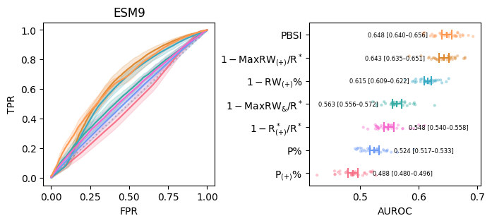
[24]:
fig, ax = plt.subplots(figsize=(3, 3))
sns.stripplot(
data=sorted_auroc,
x="AUROC", y="", size=3, hue="",
ax=ax,
palette=sorted_cmap, alpha=.4
)
ylim = (lambda v1, v2: v2 - v1)(*np.sort(np.array(ax.get_ylim())))
for i, name in enumerate(sorted_feat_names):
ax.vlines(sorted_mean_auroc.loc[name], i - (ylim * .02), i + (ylim * .02), color=sorted_cmap[i])
ax.vlines(aurocs_ci[name].low, i - (ylim * .03), i + (ylim * .03), color=sorted_cmap[i])
ax.vlines(aurocs_ci[name].high, i - (ylim * .03), i + (ylim * .03), color=sorted_cmap[i])
ax.hlines(i, aurocs_ci[name].low, aurocs_ci[name].high, color=sorted_cmap[i])
# center = np.array(ax.get_xlim()).mean()
# is_larger = (sorted_mean_auroc.loc[name] > center).item()
# low, high = aurocs_ci[name].low, aurocs_ci[name].high
# ax.text(
# low - 0.025 if is_larger else high + 0.025,
# i, f"{f2s(sorted_mean_auroc.loc[name].item())} [{f2s(low)}–{f2s(high)}]",
# ha="right" if is_larger else "left", va="center", size=6
# )
ax.set(title="ESM9")
fig.savefig(f"{outputdir}/test9_roc_integrated.pdf", **kwarg_savefig)
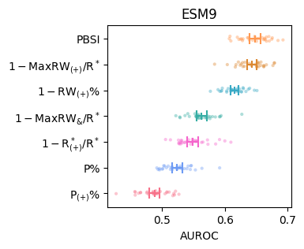
[25]:
fig, ax = plt.subplots(1, 2, figsize=(8, 3))
plt.subplots_adjust(wspace=.55)
df_pr_integrated = roc_multimetric_integration(df_pr)
# fixed_cmap = {
# **fixed_cmap,
# **{
# k: c for k, c in zip(top10, sns.color_palette("husl", len(top10)))
# }
# }
for i, key in enumerate(metrics):
df_pr_sep = df_pr_integrated.loc[
df_pr_integrated.feat_names == key, :
]
ax[0].plot(
df_pr_sep.x,
df_pr_sep.iloc[:, 2:].mean(axis=1),
c=fixed_cmap[key]
)
ax[0].fill_between(
df_pr_sep.x,
df_pr_sep.iloc[:, 2:].mean(axis=1) - df_pr_sep.iloc[:, 2:].std(axis=1),
df_pr_sep.iloc[:, 2:].mean(axis=1) + df_pr_sep.iloc[:, 2:].std(axis=1),
color=fixed_cmap[key], alpha=.2, zorder=-(i + 1) * 10
)
base = df.better_with_pb.value_counts().cumsum()[0] / df.better_with_pb.value_counts().cumsum()[1]
ax[0].plot([0, 1], [base, base], linestyle=(0, (1, 2)), c="gray", zorder=1, alpha=0.5)
ax[0].set(title="PR curve (ESM9)", xlabel="recall", ylabel="precision")
# ax.legend(fontsize="x-small", loc="lower right")
sorted_feat_names = pd.DataFrame(aps).mean().sort_values(ascending=False).index
sorted_cmap = pd.Series(
metrics, index=metrics
)[sorted_feat_names].apply(lambda k: fixed_cmap[k]).tolist()
fmt_name = lambda name: "PBSI" if "arithmetic" in name else [
feat_names_short[name], "$1-$" + feat_names_short[name]
][name in negs]
sorted_ap = pd.DataFrame({
"AP": np.array([aps[k] for k in sorted_feat_names]).ravel(),
"feat_names": np.array([[k] * len(aps[k]) for k in sorted_feat_names]).ravel(),
"": np.array([
[fmt_name(k)] * len(aps[k]) for k in sorted_feat_names
]).ravel()
})
# fixed_cmap = {k: v for k, v in zip(sorted_feat_names, sorted_cmap)}
sns.stripplot(
data=sorted_ap,
x="AP", y="", size=3, hue="",
ax=ax[1],
palette=sorted_cmap, alpha=.4
)
# ax[1].set(xlim=(0, ax[1].get_xlim()[1]))
sorted_mean_ap = sorted_ap.loc[
:, ["feat_names", "AP"]
].groupby("feat_names").mean().loc[sorted_feat_names]
ylim = (lambda v1, v2: v2 - v1)(*np.sort(np.array(ax[1].get_ylim())))
for i, name in enumerate(sorted_feat_names):
ax[1].vlines(sorted_mean_ap.loc[name], i - (ylim * .02), i + (ylim * .02), color=sorted_cmap[i])
ax[1].vlines(aps_ci[name].low, i - (ylim * .03), i + (ylim * .03), color=sorted_cmap[i])
ax[1].vlines(aps_ci[name].high, i - (ylim * .03), i + (ylim * .03), color=sorted_cmap[i])
ax[1].hlines(i, aps_ci[name].low, aps_ci[name].high, color=sorted_cmap[i])
center = np.array(ax[1].get_xlim()).mean()
is_larger = (sorted_mean_ap.loc[name] > center).item()
low, high = aps_ci[name].low, aps_ci[name].high
ax[1].text(
low - 0.015 if is_larger else high + 0.015,
i, f"{f2s(sorted_mean_ap.loc[name].item())} [{f2s(low)}–{f2s(high)}]",
ha="right" if is_larger else "left", va="center", size=6
)
# fig.savefig(f"{outputdir}/test9_pr", **kwarg_savefig)
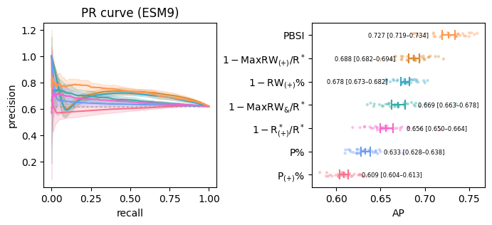
[26]:
fig, ax = plt.subplots(figsize=(3, 3))
sns.stripplot(
data=sorted_ap,
x="AP", y="", size=3, hue="",
ax=ax,
palette=sorted_cmap, alpha=.4
)
ylim = (lambda v1, v2: v2 - v1)(*np.sort(np.array(ax.get_ylim())))
for i, name in enumerate(sorted_feat_names):
ax.vlines(sorted_mean_ap.loc[name], i - (ylim * .02), i + (ylim * .02), color=sorted_cmap[i])
ax.vlines(aps_ci[name].low, i - (ylim * .03), i + (ylim * .03), color=sorted_cmap[i])
ax.vlines(aps_ci[name].high, i - (ylim * .03), i + (ylim * .03), color=sorted_cmap[i])
ax.hlines(i, aps_ci[name].low, aps_ci[name].high, color=sorted_cmap[i])
# center = np.array(ax.get_xlim()).mean()
# is_larger = (sorted_mean_ap.loc[name] > center).item()
# low, high = aps_ci[name].low, aps_ci[name].high
# ax.text(
# low - 0.015 if is_larger else high + 0.015,
# i, f"{f2s(sorted_mean_ap.loc[name].item())} [{f2s(low)}–{f2s(high)}]",
# ha="right" if is_larger else "left", va="center", size=6
# )
ax.set(title="ESM9")
fig.savefig(f"{outputdir}/test9_pr_integrated.pdf", **kwarg_savefig)
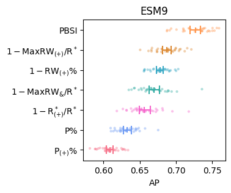
[28]:
fig, ax = plt.subplots(1, 2, figsize=(6.5, 3))
plt.subplots_adjust(wspace=.25)
df_concat = pd.concat(
[
df_bar.loc[[v for v in df_bar.loc[key_features, :].index if v in key_features], :],
df_bar_arith.iloc[:1, :]
],
axis=0
)
features = [
df.loc[:, v] for v in df_concat.index
]
names = [
r"$1-$" + feat_names_short[v] if v in negs else v for v in df_concat.index
]
names = [
feat_names_short[v] if v in key_features else v for v in names
]
names = [
"PBSI" if "arithmetic" in v else v for v in names
]
cmap = df_concat.cmap
for i, y in enumerate(features):
ax[0].plot(
*roc_curve(df.better_with_pb, y)[:2],
label=names[i] + f" (AUROC: {round(roc_auc_score(df.better_with_pb, y), 3)})",
c=cmap[i]
)
ax[0].plot([0, 1], [0, 1], linestyle=(0, (1, 2)), c="gray", zorder=1, alpha=0.5)
ax[1].plot(
*precision_recall_curve(df.better_with_pb, y)[:2][::-1],
label=names[i] + \
f" (AUROC: {round(roc_auc_score(df.better_with_pb, y), 3)}, " + \
f"AP: {round(average_precision_score(df.better_with_pb, y), 3)})" ,
c=cmap[i]
)
base = df.better_with_pb.value_counts().cumsum()[0] / df.better_with_pb.value_counts().cumsum()[1]
ax[1].plot([0, 1], [base, base], linestyle=(0, (1, 2)), c="gray", zorder=1, alpha=0.5)
ax[1].legend(fontsize="small", loc="upper center", bbox_to_anchor=(-.15, -.2), ncol=2, frameon=False)
ax[0].set(
title="ROC curve (ESM9)", xlabel="FPR", ylabel="TPR"
)
ax[1].set(title="PR curve (ESM9)", xlabel="recall", ylabel="precision")
# fig.savefig(f"{outputdir}/test9_roc_pr_integrated", **kwarg_savefig)
[28]:
[Text(0.5, 1.0, 'PR curve (ESM9)'),
Text(0.5, 0, 'recall'),
Text(0, 0.5, 'precision')]
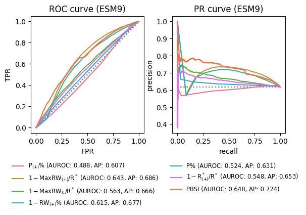
[29]:
fig, ax = plt.subplots(figsize=(3, 3))
df_concat = pd.concat(
[
df_bar.loc[[v for v in df_bar.loc[key_features, :].index if v in key_features], :],
df_bar_arith.iloc[:1, :]
],
axis=0
)
features = [
df.loc[:, v] for v in df_concat.index
]
names = [
feat_names_short[v] if v in key_features else v for v in df_concat.index
]
cmap = df_concat.cmap
for i, y in enumerate(features):
ax.plot(
*roc_curve(df.better_with_pb, y)[:2],
label=names[i] + f" (AUROC: {round(roc_auc_score(df.better_with_pb, y), 3)})",
c=cmap[i]
)
ax.plot([0, 1], [0, 1], linestyle=(0, (1, 2)), c="gray", zorder=1, alpha=0.5)
ax.legend(fontsize="x-small", loc="center left", bbox_to_anchor=(1, .5), frameon=False)
ax.set(title="ESM9", xlabel="false positive rate", ylabel="true positive rate")
# fig.savefig(f"{outputdir}/test9_roc_integrated", **kwarg_savefig)
[29]:
[Text(0.5, 1.0, 'ESM9'),
Text(0.5, 0, 'false positive rate'),
Text(0, 0.5, 'true positive rate')]
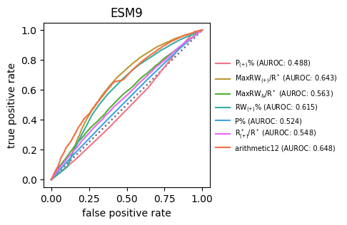
[30]:
fig, ax = plt.subplots(figsize=(3, 3))
for i, y in enumerate(features):
ax.plot(
*precision_recall_curve(df.better_with_pb, y)[:2][::-1],
label=names[i] + f" (AP: {round(average_precision_score(df.better_with_pb, y), 3)})",
c=cmap[i]
)
base = df.better_with_pb.value_counts().cumsum()[0] / df.better_with_pb.value_counts().cumsum()[1]
ax.plot([0, 1], [base, base], linestyle=(0, (1, 2)), c="gray", zorder=1, alpha=0.5)
ax.legend(fontsize="x-small", loc="center left", bbox_to_anchor=(1, .5), frameon=False)
ax.set(title="ESM9", xlabel="recall", ylabel="precision")
# fig.savefig(f"{outputdir}/test9_pr", **kwarg_savefig)
[30]:
[Text(0.5, 1.0, 'ESM9'), Text(0.5, 0, 'recall'), Text(0, 0.5, 'precision')]
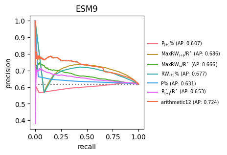
[31]:
keys = np.array(key_features + ["arithmetic12", "arithmetic41"])
nrow = 2
ncol = np.ceil(keys.size / nrow).astype(int)
fig, ax = plt.subplots(
nrow, ncol,
figsize=(3 * ncol, 3 * nrow),
sharey=True
)
plt.subplots_adjust(hspace=0.3, wspace=0.2)
for key, a in zip(keys, ax.ravel()):
sns.kdeplot(df[key][df.better_with_pb == False], ax=a, label="C+LOO-suited", fill=True)
sns.kdeplot(df[key][df.better_with_pb == True], ax=a, label="PB-suited", fill=True)
a.legend(loc="upper right", fontsize="small", frameon=False)
a.set(
title=feat_names_short[key] if key in key_features else key,
xlabel=""
)
# if conf.savefig:
# fig.savefig(f"{conf.out}/top10_kde{conf.suffix}", **kwarg_savefig)
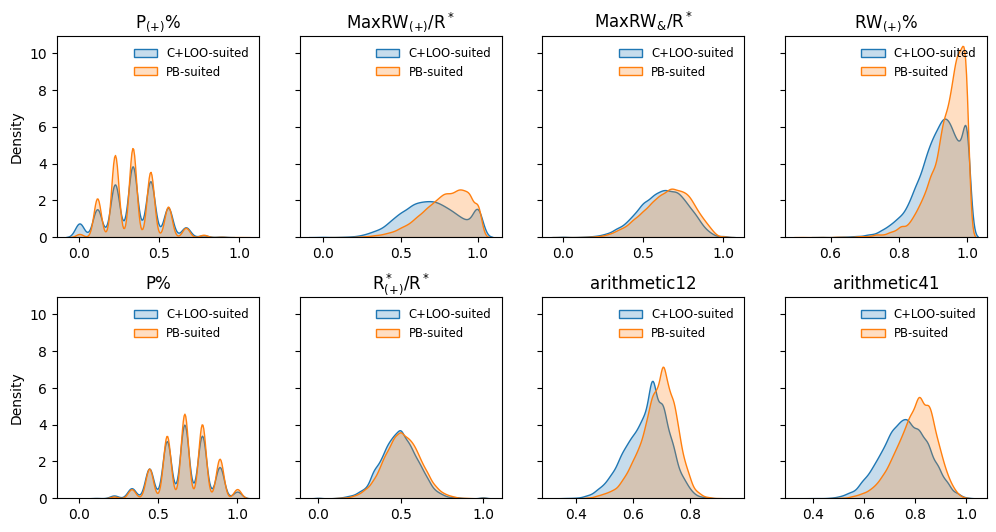
from sklearn.metrics import r2_score
plt.plot( pd.concat([df.pb - df.cloo, df.iloc[:, 4:-1]], axis=1).corr().abs().iloc[:, 0].values )
sns.heatmap( pd.concat( [df.pb - df.cloo, df.iloc[:, 4:-1]], axis=1 ).corr().abs(), cmap=”berlin” )
[32]:
pbsi_features = [
'positive_pathway_coverage',
'max_positive_edge_density',
'mean_positive_edge_density',
]
[33]:
xs, ys = np.array([]), np.array([])
feat_names = []
folds = []
metrics = pbsi_features
# metrics = top10
aurocs = {key: [] for key in ["Logistic regression", "PBSI"]}
for i, (tr, te) in enumerate(
StratifiedKFold(
n_splits=30, shuffle=True, random_state=0
).split(df[metrics], df.better_with_pb)
):
x_tr, y_tr = df[metrics].loc[tr, :], df.better_with_pb[tr]
x_te, y_te = df[metrics].loc[te, :], df.better_with_pb[te]
for key in ["Logistic regression", "PBSI"]:
if key == "Logistic regression":
lr = LogisticRegression(random_state=0)
lr.fit(x_tr, y_tr)
x, y = roc_curve(y_te, lr.predict_proba(x_te)[:, 1])[:2]
aurocs[key] += [roc_auc_score(y_te, lr.predict_proba(x_te)[:, 1])]
else:
x, y = roc_curve(y_te, df.loc[x_te.index, "arithmetic12"])[:2]
aurocs[key] += [roc_auc_score(y_te, df.loc[x_te.index, "arithmetic12"])]
xs, ys = np.hstack([xs, x]), np.hstack([ys, y])
feat_names += [key] * x.size
folds += [i] * x.size
df_roc = pd.DataFrame({
"x": xs, "y": ys, "feat_names": feat_names, "folds": folds
})
aurocs_ci = {
k: bootstrap(
(v,), **kwarg_bootstrap
).confidence_interval for k, v in aurocs.items()
}
[34]:
fig, ax = plt.subplots(1, 2, figsize=(7, 3))
plt.subplots_adjust(wspace=.35)
df_roc_integrated = roc_multimetric_integration(df_roc)
cmap = [".2", fixed_cmap["arithmetic12"]]
for i, key in enumerate(["Logistic regression", "PBSI"]):
df_roc_sep = df_roc_integrated.loc[
df_roc_integrated.feat_names == key, :
]
for fold in df_roc.folds.unique():
ax[0].plot(
df_roc.loc[(df_roc.feat_names == key) & (df_roc.folds == fold), :].x,
df_roc.loc[(df_roc.feat_names == key) & (df_roc.folds == fold), :].y,
c=cmap[i], alpha=.1, zorder=-100
)
ax[0].plot(
df_roc_sep.x,
df_roc_sep.iloc[:, 2:].mean(axis=1),
c=cmap[i], label=key, zorder=10
)
ax[0].plot([0, 1], [0, 1], linestyle=(0, (1, 2)), c="gray", zorder=1, alpha=0.5)
ax[0].set(title="ESM9", xlabel="FPR", ylabel="TPR")
ax[0].legend(loc="lower right", frameon=False)
sorted_feat_names = pd.DataFrame(aurocs).mean().sort_values(ascending=False).index
sorted_cmap = pd.Series(
[i for i in range(len(["Logistic regression", "PBSI"]))], index=["Logistic regression", "PBSI"]
)[sorted_feat_names].apply(lambda i: cmap[i]).tolist()
# fmt_name = lambda name: "PBSI" if "arithmetic" in name else [
# feat_names_short[name], "$1-$" + feat_names_short[name]
# ][name in negs]
sorted_auroc = pd.DataFrame({
"AUROC": np.array([aurocs[k] for k in sorted_feat_names]).ravel(),
"feat_names": np.array([[k] * len(aurocs[k]) for k in sorted_feat_names]).ravel(),
"": np.array([
[k] * len(aurocs[k]) for k in sorted_feat_names
]).ravel()
})
# fixed_cmap = {k: v for k, v in zip(sorted_feat_names, sorted_cmap)}
sns.stripplot(
data=sorted_auroc,
y="AUROC", x="", size=3, hue="",
ax=ax[1],
palette=sorted_cmap, alpha=.4
)
# ax[1].set(xlim=(0, ax[1].get_xlim()[1]))
sorted_mean_auroc = sorted_auroc.loc[
:, ["feat_names", "AUROC"]
].groupby("feat_names").mean().loc[sorted_feat_names]
xlim = (lambda v1, v2: v2 - v1)(*np.sort(np.array(ax[1].get_xlim())))
ci_labels = []
for i, name in enumerate(sorted_feat_names):
ax[1].hlines(sorted_mean_auroc.loc[name], i - (xlim * .025), i + (xlim * .025), color=sorted_cmap[i])
ax[1].hlines(aurocs_ci[name].low, i - (xlim * .05), i + (xlim * .05), color=sorted_cmap[i])
ax[1].hlines(aurocs_ci[name].high, i - (xlim * .05), i + (xlim * .05), color=sorted_cmap[i])
ax[1].vlines(i, aurocs_ci[name].low, aurocs_ci[name].high, color=sorted_cmap[i])
# low, high = aurocs_ci[name].low, aurocs_ci[name].high
# ci_labels += [name + "\n" + f"{f2s(sorted_mean_auroc.loc[name].item())} [{f2s(low)}–{f2s(high)}]"]
ax[1].set_xticklabels(sorted_feat_names, fontsize="small")
ax[1].set_xlim([-.3, 1.3])
fig.savefig(f"{outputdir}/test9_logistic_regression.pdf", **kwarg_savefig)
/tmp/ipykernel_120/829231031.py:72: UserWarning: set_ticklabels() should only be used with a fixed number of ticks, i.e. after set_ticks() or using a FixedLocator.
ax[1].set_xticklabels(sorted_feat_names, fontsize="small")
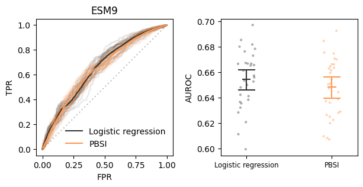
[35]:
from sklearn.metrics import confusion_matrix
[36]:
def tp(y_true, y_pred):
mat = confusion_matrix(y_true, y_pred)
return mat[1, 1] / mat[1].sum()
def fp(y_true, y_pred):
mat = confusion_matrix(y_true, y_pred)
return mat[0, 1] / mat[0].sum()
[37]:
vals = np.sort(df.arithmetic12.unique())
fps = np.vectorize(
lambda t: fp(df.better_with_pb, df.arithmetic12 > t)
)(vals)
tps = np.vectorize(
lambda t: tp(df.better_with_pb, df.arithmetic12 > t)
)(vals)
acc = np.vectorize(
lambda t: accuracy_score(df.better_with_pb, df.arithmetic12 > t)
)(vals)
f1 = np.vectorize(
lambda t: f1_score(df.better_with_pb, df.arithmetic12 > t)
)(vals)
[38]:
fig, ax = plt.subplots(figsize=(3, 3))
# thresh = np.linspace(0, 1, 21)
df_thresh = pd.DataFrame({
"thresh": vals,
"accuracy": acc,
"F$_1$": f1,
"TPR $-$ FPR": tps - fps,
})
metrics = np.array(["accuracy", "F$_1$", "TPR $-$ FPR"])
thresh_recorder = {}
cmap = [
plt.cm.managua(
(i + 1) / (metrics.size + 1)
) for i in range(metrics.size)
]
for i, key in enumerate(metrics):
v = df_thresh.loc[:, key].values
argmax = np.argmax(v)
sns.lineplot(
data=df_thresh, x="thresh", y=key,
label=f"{key} (argmax: {vals[argmax].round(3)})",
c=cmap[i]
)
ax.text(
vals[argmax], v[argmax], vals[argmax].round(3),
ha="center", va="bottom", c=cmap[i], size=8
)
ax.text(
vals[0], v[0],
key + "\n" if v[0] < .5 else "\n\n" + key,
ha="left",
va="bottom" if v[0] < .5 else "center", c=cmap[i],
size=8
)
thresh_recorder = {**thresh_recorder, key: vals[argmax]}
ax.set(
title="ESM9",
xlabel="thresholds in PBSI", ylabel="scores",
ylim = np.array(ax.get_ylim()) + np.array([0, .1])
)
# ax.legend(fontsize="x-small")
ax.legend().remove()
fig.savefig(f"{outputdir}/test9_thresholds.pdf", **kwarg_savefig)
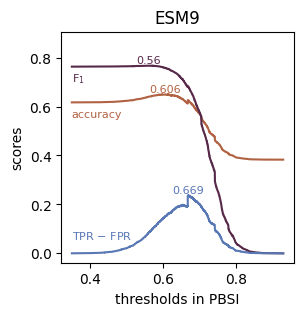
[39]:
from biodoe_tools.simulation import model_phi, model_psi
[40]:
fig, ax= plt.subplots(figsize=(3, 3))
sns.barplot(
data=pd.DataFrame({
"": ["Model $\Phi$", "Model $\Psi$"],
"PBSI": map(pbsi, [model_phi, model_psi])
}),
x="", y="PBSI", ax=ax, color="w", edgecolor=".6"
)
xlim = ax.get_xlim()
for i, (k, v) in enumerate(thresh_recorder.items()):
c = [
plt.cm.managua(
(i + 1) / (metrics.size + 1)
) for i in range(metrics.size)
]
ax.hlines(v, *xlim, color=c[i], label=k)
ax.text(1, v, k, size=9, ha="center", va="bottom", color=c[i])
# ax.legend(loc="lower right", fontsize="small")
fig.savefig(f"{outputdir}/test9_simulators.pdf", **kwarg_savefig)
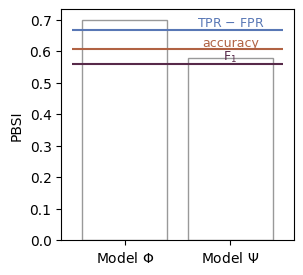
[56]:
## the most PB-suited
p1_arr = np.array([
1, 1, 1, 1, 1, 1, 1, 1, 1,
0, 0, 0, 0, 0, 0, 0, 0,
0, 0, 0, 0, 0, 0, 0,
0, 0, 0, 0, 0, 0,
0, 0, 0, 0, 0,
0, 0, 0, 0,
0, 0, 0,
0, 0,
0
])
## the most C+LOO-suited
c_arr = np.array([
0, 0, 0, 0, 0, 0, 0, 0, 1,
1, 1, 1, 1, 1, 1, 1, 1,
1, 1, 1, 1, 1, 1, 1,
1, 1, 1, 1, 1, 1,
1, 1, 1, 1, 1,
1, 1, 1, 1,
1, 1, 1,
1, 1,
1
])
## the PB-suited ver 2
p2_arr = np.array([
1, 1, 1, 1, 0, 0, 0, 0, -1,
1, 1, 1, 1, 1, 1, 1, 1,
1, 1, 1, 1, 1, 1, 1,
1, 1, 1, 1, 1, 1,
1, 1, 1, 1, 1,
1, 1, 1, 1,
1, 1, 1,
1, 1,
1
])
[60]:
for k, model_arr in {"p": p1_arr, "c": c_arr, "s": p2_arr}.items():
fig, ax = plt.subplots(figsize=(5, 5))
esm9 = Test9(edge_assignment=model_arr)
esm9.plot(ax=ax)
ax.set_title(
{
"p": "Model $\Pi$ (ESM9)",
"c": "Model $\Delta$ (ESM9)",
"s": "Model $\Sigma$ (ESM9)"
}[k]
)
fig.savefig(f"{outputdir}/sim_model_{k}.pdf", **kwarg_savefig)
fig, ax = plt.subplots(figsize=(4, 3))
df_network_metrics = pd.DataFrame({
"scores": [
positive_pathway_coverage(model_arr),
1 - max_positive_edge_density(model_arr),
1 - mean_positive_edge_density(model_arr),
pbsi(model_arr)
],
"": [
"$1-$" + feat_names_short[k] if k in negs else feat_names_short[k] for k in pbsi_features
] + ["PBSI"]
})
sns.scatterplot(
data=df_network_metrics,
y="", x="scores", palette=[fixed_cmap[k] for k in pbsi_features] + [fixed_cmap["arithmetic12"]],
hue="", legend=False, s=200
)
for i, c in enumerate([fixed_cmap[k] for k in pbsi_features] + [fixed_cmap["arithmetic12"]]):
score = df_network_metrics.scores[i]
ax.hlines(i, 0, score, color=c, lw=3)
ax.text(
score -.05 if score > .5 else score + 0.1,
i - 0.05 if score > .5 else i,
df_network_metrics[""][i], c=c,
ha="right" if score > .5 else "left",
va="bottom" if score > .5 else "center"
)
ylim = ax.get_ylim()
ax.vlines(0, *ylim, color=".2", lw=.5, zorder=-10)
ax.vlines(1, *ylim, color=".2", lw=.5, zorder=-10)
[ax.spines[loc].set_visible(False) for loc in ["top", "right", "left"]]
ax.tick_params(labelleft=False, left=False)
ax.set(xlim=(-.05, 1.05), ylim=ylim, xlabel="Index values")
fig.savefig(f"{outputdir}/sim_model_{k}_indices.pdf", **kwarg_savefig)
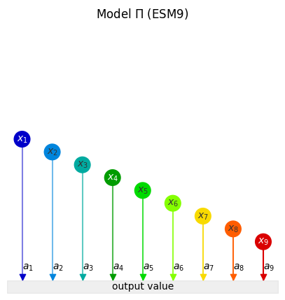
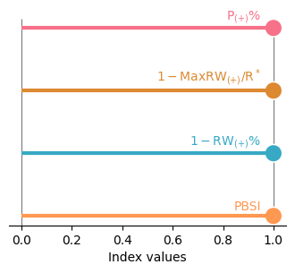
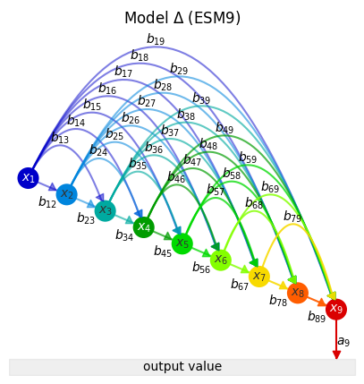
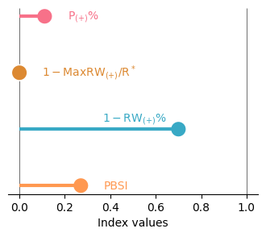
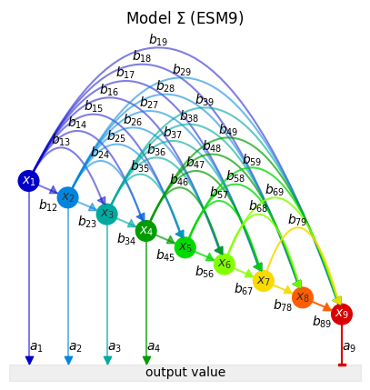
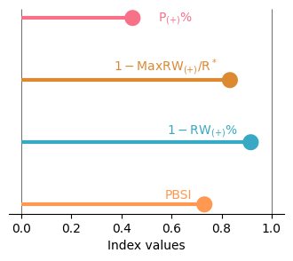
[58]:
pipe = BenchmarkingPipeline(
configuration={
"p": {"edge_assignment": p1_arr, "model_id": "Model $\Pi$"},
"c": {"edge_assignment": c_arr, "model_id": "Model $\Delta$"},
"s": {"edge_assignment": p2_arr, "model_id": "Model $\Sigma$"},
},
simulator=Test9,
noise_arr=[.5, 1, 2, 4],
n_range=np.arange(1, 11),
n_rep=30
)
[59]:
pipe.plot(savefig=True, extension=".pdf")
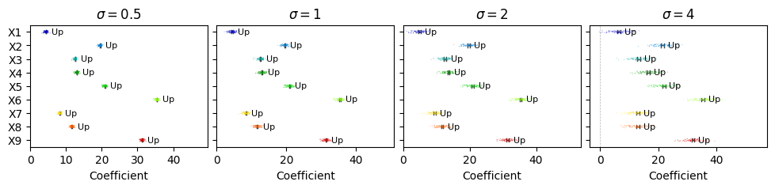
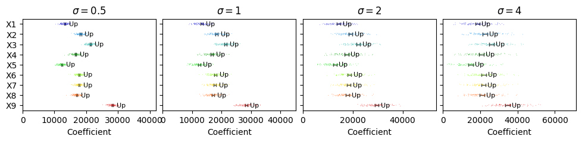
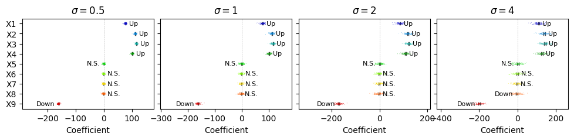
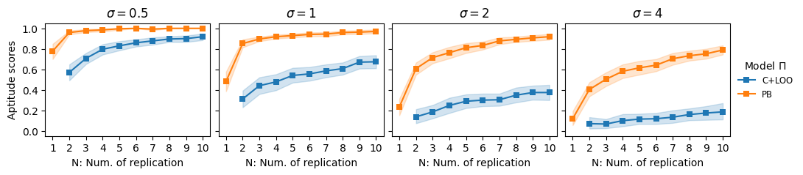
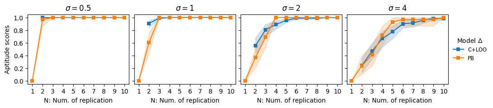
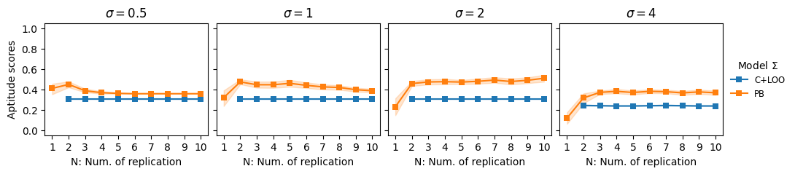
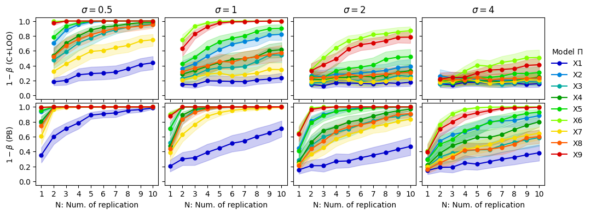
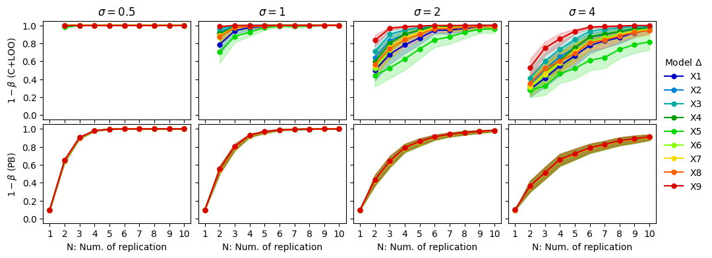

[ ]: